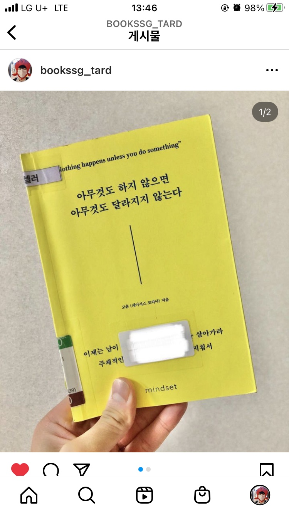

당신이 경청에 얼마나 진심인지에 따라 상대가 당신에게 말할 수 있는 정보의 양은 달라진다. 우리는 다른 생각이 머릿속을 떠돌아 다니더라도, 절대 말하고 있는 사람의 눈만은 피하지 말자. 그러면 상대방은 자연히 당신에게 호감을 가질 수 밖에 없다.
확실하게 구분해야 할 점은 ‘미소’는 ‘웃음’이 아니란 점이다. 경청하며 가벼운 미소를 지어주자. 그렇기에 의식적으로 미소를 짓고 활용하는 습관이 중요하다.
처음 만나는 상대에게 호감을 얻기 위해선 만나기 전 관심을 가지는 부분에 대해서 짧게 나마 연구를 하고 가자. 많이 알고 있는 것보다 오히려 얕게 알고 있으면 상대에게 상세한 정보를 말할 수 있는 기회를 줄 수 있다. 가장 중요한 것은 호흡과 관심사가 비슷해야 한다는 것.
비록 그 노력의 결과가 실패했을지라도 그 노력 자체가 그들의 삶에 가치가 있기에 노력을 폄하하지 말자. 여기서 가장 중요한 점은 정말 사소하고 작은 노력도 섬세하게 알아차리고 칭찬하자.(보이지 않는 점까지 언급하며 인정해주자)
